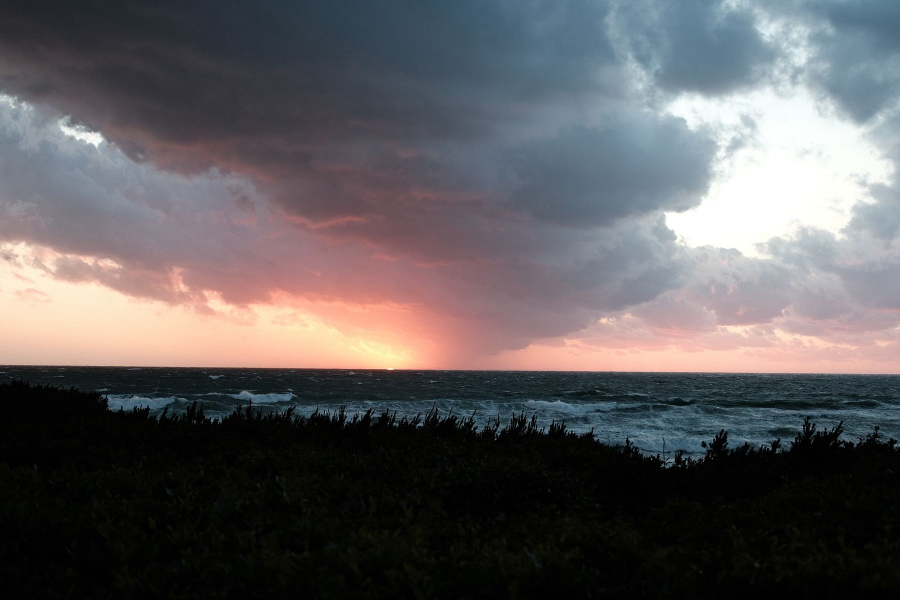
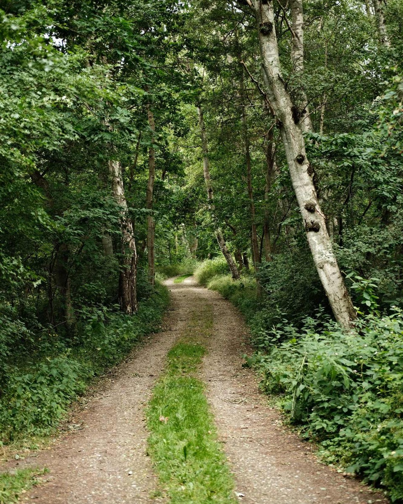
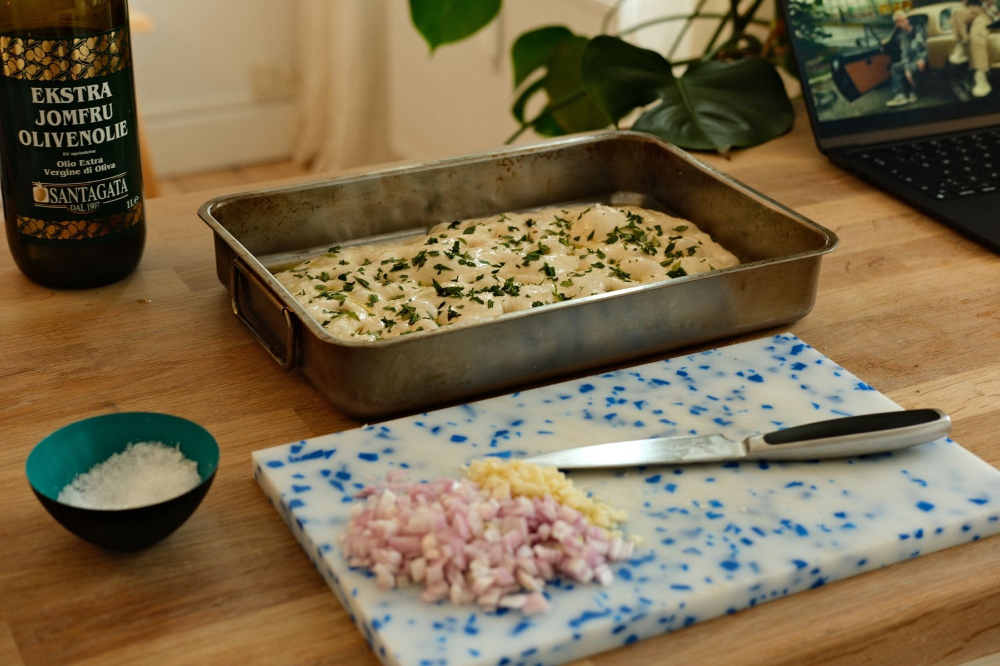

2026-11 · Aesthetic · Figma · GitHub
Glass grades
Inspired by turning the film simulation dial on my Fujifilm X-T50: seven kinds of light as panes of glass laid over one picture. Slide the glass, lift it off to compare, or put a picture of your own under it.
Seven kinds of light
The same picture through every grade at once, sea fog to streetlight. Tap a pane to open it; without script the selectors and the Strip and Pane switch still do.
The strip · all seven side by side, in the order of a day. Drag it, flick it, hold it, or drop a picture of your own onto it.
.glass-grades
Or one of mine, taken with my X-T50

One pane open
The open pane takes 62% of the window, and the others stay as slivers you can still see and tap; on a phone it takes 82%, and the rail is the way to the slivers.
High sun · muted colour over hard shadows. Tap the open pane, or press Enter, to lift the glass off and compare; arrow keys step it a pane at a time.
value="pane" checked

Night, upright · a tall picture narrows the window rather than growing past the screen.
--glass-grades-ratio: 0.8

A recipe on top
The camera’s own numbers over whichever light is open: highlight and shadow tone, colour, a white balance shift and grain. Each is a token set on this instance’s root, and the line under them is the recipe as it would be written down.
Daylight, with a recipe · the reference light, made warm and punchy. Change the light and the recipe stays on it.
--glass-grades-tone-h, -tone-s, -color, -wb-r, -wb-b, -grain-step

Interaction
What a pointer, a finger and a keyboard can do, and how big each target is. The keys work once the picture has focus.
Choosing a light
- Click or tap a selector
- The glass glides to its pane, ticking past every pane on the way. On the rail, ← → move the choice. Works without script.
- Click or tap a pane
- In the strip, the pane under the click opens; with one open, a click on a sliver opens that one instead. ← → step one pane, Home and End go to the first and the last.
- Drag sideways
- The glass follows the hand, its moving edge under the finger, and sticks a little at each pane. A drag on the strip opens it. On a phone, a swipe up or down still scrolls the page.
- Let go
- Slower than 400px a second, the glass lands on the nearest pane; faster, it coasts on, three panes at most. A press on moving glass catches it.
Comparing
- Press and hold
- A still press of 320ms lifts the glass off the picture for as long as it is held; a sideways move sets it down and drags. Holding Space does the same.
- Click or tap the open pane
- Lifts the glass until the next click anywhere on the picture. Enter lifts it, and Enter again puts it back.
- Strip | Pane
- All seven side by side, or one pane open. S switches too. Works without script.
Your own picture
- Photo, drop or paste
- Pick one with Photo, drop an image file anywhere on the component, or paste one, which goes to the component last touched. It slides in under the glass, and a tall one narrows the window.
- Save
- Downloads the picture through the chosen light, at the picture’s own size, with any recipe on it.
Targets
- A selector
- At least 88px wide and 97px tall. Where seven do not fit, the rail scrolls rather than narrowing them.
- A sliver
- 43px beside the open pane where this page is widest, and 28 to 33px in the pair above. On a phone, about 10px: there to show its light, with the rail the way to it.
- A button or the switch
- 34px tall for a pointer, 46px for a finger.
- The picture
- The whole window takes a click, a drag and a hold, and takes focus for the keys.
Heard
Switch Sound on above. Every pane the glass passes ticks, a landing seats it, and lifting the glass and setting it down each have a sound of their own. On Android the same moments are felt; an iPhone ticks once as your finger lets go.
--glass-grades-click: 0.5
Decisions
Seven colour grades as seven panes of glass laid over one picture. As a strip they show the whole set at once; open one and it takes most of the window while the others close to slivers you can still see and tap. Drag and the glass slides under your hand, sticking a little at each pane; hold it, or tap the open pane, and it lifts off to show the picture bare. A picture of your own slides in under the glass and saves out through it, and a recipe in the camera’s own units lies over whichever grade is open. Under it all are two radio groups, and without script every pane still opens and slides.
-
One number opens every pane.
:has()rules write--glass-grades-pfrom the checked light and--glass-grades-afrom the Strip | Pane switch, both registered with@propertyso they transition, and every pane’s left edge is a share of the window:(1 − a)·j/n + a·(j·s + (open − s)·clamp(0, j − p, 1)), withsone sliver andopen.62. The index, the scale and the readout read the same numbers, so nothing on the component can disagree with the glass, andcomponent.jsonly ever drivespfaster than a transition can. Below 26rem the root, an inline-size container, restatesopenas .82: the other panes close to slivers of about 10px, there to show every grade at the window’s edges rather than to be aimed at, the rail is the way to them, and the index and the scale keep the strip’s arithmetic to say where in the seven the open pane is. -
A grade is a filter and two sheets of colour, and a recipe moves all three.
Each pane is the picture through
brightness() contrast() saturate(), then a toe sheet inscreen, which moves black to the toe colour and leaves white alone, then a shoulder sheet inmultiply, which moves white to the shoulder colour and leaves black alone, then grain inoverlay. Nothing reads a pixel, so a grade is instant and works on a photo, an illustration or a live element, and each selector runs the same layers over a reference row: black to white, then skin, sky, leaf and red. Over any grade lies a recipe in the camera’s units. Highlight and shadow tone harden through contrast and soften through the sheets, colour scales saturation, a white balance shift is a gain per channel on the shoulder, and grain adds weak or strong to the grade’s own. Save draws the same layers on a canvas, and does the filter by hand where a canvas takes none. The pictures it is shown on are eight of my own from the same X-T50, and several had already been through one of its simulations, as most pictures dropped on it will have: a grade has to hold over another. -
Glass only where it does a job.
The one material on the picture is the edge of each pane: a lit face and a shaded face from one light on the left, a few pixels of the green float glass has at its edge, and a 14px strip magnified 1.45× so the picture bends where the glass ends. The edges catch more light the faster they move. The body is the camera’s matte charcoal, and the open pane carries the mode dial’s orange index.
-
The glass moves under the hand.
One pane of drag is the distance the moving edge travels, the open pane less a sliver, so at
--glass-grades-drag: 1the edge stays under the hand, and the mode dial’s detent curve,x − k·sin(2πx)/2πwithk.55, makes it stick near each pane. A release faster than 400px/s is projected 0.4s ahead, so a flick coasts up to three panes, and a slower one lands on the nearest pane. Either way it glides there oncubic-bezier(.25, 1, .5, 1), 560ms a pane, the curve the stylesheet’s own transition uses: it slows from its first frame, never passes its pane, and leaves at the speed the hand let go at, its first control point set to match. A still press of 320ms lifts the glass for as long as it is held, and a sideways move sets it down and drags; a tap on the open pane, or Enter, lifts it until the next. Every stop passed ticks and a landing seats the glass, each a tap on thick glass: a note, a quiet octave and a trace of a struck plate’s second mode. Every note is from one chord, C major, so a run of them never clashes. The landing, the sound of choosing a grade, is the lowest, and everything but the ticks carries a slight reverb, a dark tail of about a second. It is silent while--glass-grades-clickis 0, and a finger or a pen gets the same moments as vibration where the browser can vibrate; an iPhone, which lets a page tick only inside a tap, ticks once as the finger lets go and as a selector or the switch is tapped. -
The grades are kinds of light, in the order of a day.
Sea fog, Daylight, High sun, Midsummer, Blue hour, Night and Sodium, for a sodium street lamp; in Danish Havgus, Dagslys, Højsol, Sankthans, Blå time, Nat and Natrium. Each name says what its numbers do: fog lifts the blacks, low sun warms the whites, and night and a sodium lamp take the colour away, the eye for want of light and the lamp because it gives one wavelength. High sun carries muted colour over hard shadows and Midsummer amber highlights over soft ones, by their decisions only. A selector’s hint says what its grade does, never what its name means.
notes.md — the full record, including what was measured and what is not done yet